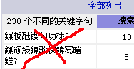

August 31, 2003
August 30, 2003
PageRank普遍猛增
前天的学习笔记中，说Isaac和chedong的主页的google网页级别是5和4，今天再看就已经是6和5了，而我自己的也从0猛跳到4了，很意外。
深入阅读"PageRank普遍猛增"August 29, 2003
August 28, 2003

August 27, 2003
Log4J学习笔记（3）
我这儿有两个程序，一个是普通的java程序，实现了一个“九九表”；另一个是servlet。我这儿用的tomcat是4.1.12，J2SE是1.3.1，log4j的版本是1.2.8.
深入阅读"Log4J学习笔记（3）"August 26, 2003

August 25, 2003
Log4J学习笔记（1）
说实话，除了log4j的功能外，我更喜欢它的logo.
下面的这篇笔记，主要是"borrow from"Log4J的随机文档"Short introduction to log4j"，由Ceki Gülcü 写于March 2002，其它参考文档见文后。
利用apache-commons-fileupload写jsp上传文件
 需要下载fileupload和beanutils两个包，代码如下。
需要下载fileupload和beanutils两个包，代码如下。
今天才发现对MT的了解太不够了
一是今天才知道新建文章的页面布局是可以自定义的，二是今天才知道利用MT建立一个fotolog非常简单。
以前还跟vicent说，MT建立fotolog需要手工处理相片大小呢，糗大了。:(
August 24, 2003
August 23, 2003
August 22, 2003
用sendmail发送带附件的email
用perl语言写了一个脚本，其中调用了sendmail和uuencode两个外部程序。
原程序中，有几处错误，我都一一修订过来。
 今天下午无意中发现的！
今天下午无意中发现的！{kind=link}
改掉Stephen's Referrer的UTF-8乱码
 用前文不用perl5.8解析google检索的UTF8编码提到方法，但好象要一个站点一个站的判断了。因为这里没有编码信息啊。
用前文不用perl5.8解析google检索的UTF8编码提到方法，但好象要一个站点一个站的判断了。因为这里没有编码信息啊。
August 21, 2003
用perl5.6为AWStats解析google检索的UTF8编码
 车东已经给出了在perl5.8下的解决方案，并提供了相应的补丁,以解决awstats进行检索词时，因google检索串用UTF编码而致在gb2312的网页检索词显示为乱码的问题。
由于升级perl从5.6到5.8可不是件容易的事，所以最好的办法还是想法在perl5.6的环境中解决这个问题。Awstats本身支持汉语，此也算对它的进一步汉化吧。
 现提出的解决办法，使用icov和Text-Iconv-1.2来将UTF8变为GB2312。 下面是具体步骤：
现提出的解决办法，使用icov和Text-Iconv-1.2来将UTF8变为GB2312。 下面是具体步骤：
August 20, 2003
主页设计技术（3）：主页可用性的113条原则
Jakob博士分26类，列出了113条原则。下面，类的倒序一一摘录（每类中顺序不变）。
在录入的过程中，我渐渐发现只要找到每条原则所要达到的目的或要解决的问题，这样就可以据具体情况灵活的加以解决。
三生石－－好一个美丽的传说
 三生石上旧精魂，赏月吟风莫要论；惭愧情人远相访，此身虽异性长存。身前身后事茫茫，欲话因缘恐断肠；吴越山川寻己遍，却回烟棹上瞿塘。
三生石上旧精魂，赏月吟风莫要论；惭愧情人远相访，此身虽异性长存。身前身后事茫茫，欲话因缘恐断肠；吴越山川寻己遍，却回烟棹上瞿塘。
可以不相信轮回，能否认相识相爱都是缘分吗？
留言簿/Guestbook
 如果大家找不到适合的地方可以留言的，就留在@里吧。
如果大家找不到适合的地方可以留言的，就留在@里吧。
You can treat this entry as a guestbook. Please leave messages via form below.
August 19, 2003
August 18, 2003
主页设计技术（2）：对易用性的新认识
Jakob关于因特网用户使用经验状态的定律是：用户总是把绝大部分时间花在其它网站而不您的站点上。
这意味着要想吸引用户，站点要容易使用，并遵循一些设计惯例，以防止一些特殊的交互诀窍让用户敬而远之。
我之教育观
心灵小屋的韩老师，在其第99篇和第100篇网志中谈了一些教学体会。我不从事教育也无实践，关键是根本没为教育做点什么，却跳将出来如癞蛤蟆般聒噪一番，实在误国误民，惭愧惭愧！
向来深感“清淡误国”，不曾想自己也溺入其中，我不敢对视这双渴望的眼睛！下面将我在小屋的胡说八道，连同别人的诚肯恳发言一并收来，一作总结，二作警戒。
August 17, 2003
主页设计技术（1）：推荐的主页设计
 在同事的帮助下，办了个借书卡，并在他的带领下，借回了Jakob的Homepage Usability: 50 Websites Deconstructed的汉译本《专业主页设计技术－－50佳站点赏析》。
在同事的帮助下，办了个借书卡，并在他的带领下，借回了Jakob的Homepage Usability: 50 Websites Deconstructed的汉译本《专业主页设计技术－－50佳站点赏析》。
随着阅读，会逐渐把一些笔记放上来。今天是第一部分，是作者基于主页设计的一些统计资料，提出的主页设计方案。
一个讲道理的故事
一开QQ，就弹出一个朋友转来的URL，链接到一个页面，借着一个故事讲述一个道理：“世间最珍贵的不是‘得不到’和‘已失去’，而是现在能把握的幸福。”，并预言将这个故事（或URL）转发给自己的朋友，心想能事成。有兴趣的朋友可以到http://www.gzgy.cn.gs/yggs/看到原文。
深入阅读"一个讲道理的故事"August 16, 2003
August 15, 2003
关于blog定位的思考（3）
Joi Ito提到Econimist上有人讨论blog商业化的问题，去一看，思路也没离开blog本身，如托管、软件费用等，说得最多的是广告问题。
深入阅读"关于blog定位的思考（3）"让Refer 2.03 在低于4.1+的php环境运行
Refer 2.03可以把反向连接显示出来，供网主参考，可是要求运行在php 4.1+上，下面通过hack源程序，使其运行在php 4.0.6-7上。
深入阅读"让Refer 2.03 在低于4.1+的php环境运行"August 14, 2003
August 13, 2003
August 12, 2003
August 11, 2003
August 10, 2003
August 09, 2003
.NET vs. JavaJava vs. .NET第二篇合译完了
等keke处理一下，就把网址挂上来现在可以在这儿看到。
关于blog定位的思考（2）
我一直在思考blog的形象和自身定位的问题。在回应媒体“隐私的公开和窥私的癖好”的观点时，总让我感到有点心虚或无所适从。为什么我们难以理直气壮地进行回应呢？因为，至少我是这么认为的，我们还没有找到blog的自身确切定位，致使除了极少量的blogger结群为了一个明确的目的之外，绝大多数blogger们还只是在渲泻自己的感觉或流水着自己的生活，由此也决定了他们只能做为一个独立的个体，出现在网络之中。彼此间的联系，也仅仅是信息的流动，以及可能的慢慢增长的一些人性关怀。
深入阅读"关于blog定位的思考（2）"August 08, 2003
web用户信息“掠食”的行为演化
Jakob Nielsen博士在2003年6月30日的文章Information Foraging: Why Google Makes People Leave Your Site Faster，指出了搜索引擎，特别是google的出现，使人们在某个站点停留的时间缩短，并由此提出了一些针对性的设计建议。其结论和建议，发人深思。
深入阅读"web用户信息“掠食”的行为演化"关于中国大陆blogger的一些统计
在等待被饭碗志接纳的时候，顺便浏览了一下这个网站，发现有按国家（地区）分类的列表显示，于是把祖籍为大陆的中国人（以下简称中国人）的网志列表计17页全抓回来，作了一个简单统计，发现一些有趣的结果。
深入阅读"关于中国大陆blogger的一些统计"August 07, 2003
关于usability的定义
usabilityfirst给出的定义是the characteristic of being easy to use, usually applied to software, but relevant to almost any human artifact.
深入阅读"关于usability的定义"August 06, 2003
首页可用性设计的10条指导方针（译）
Jakob Nielsen博士在2002年5月12日撰文Top Ten Guidelines for Homepage Usability，今摘译每条指导方针。
深入阅读"首页可用性设计的10条指导方针（译）"August 05, 2003
August 04, 2003
August 03, 2003
关于中国公共卫生体系的一些数据
SARS流行期间，我非常担心它传入农村。我的家乡在山东农村，我深知家乡农村医疗条件多么差，其收治能力是多么弱。即使是在比较发达的山东都这样，中西部地区也不会好多少。SARS一旦传入农村，就真成了胡书记说的“灾难”了。不幸之中万幸的是，SARS擦农村而过！谢天谢地！
August 02, 2003
为什么活成这样？
前几天，收到朋友的来信，回复我抱怨很忙的去信时，说有人喜欢清闲，有人喜欢忙碌...，只要选定适合自己的，就是很好的。我突然愣住了，我以前从没有从这个角度看过生存的状态。
August 01, 2003
TWIKI手记（一）：安装
TWIKI据说是功能最强大的wiki，它的主页在大陆不能直接访问，自己找个代理吧。：）
因为功能多，所以复杂的很，加上用google搜twiki受限，难以找到网友们的安装和使用记录，只好自己硬着头皮看英文文档了。
下面是我的一些安装使用手记，希望能为后来者提供一些帮助吧。